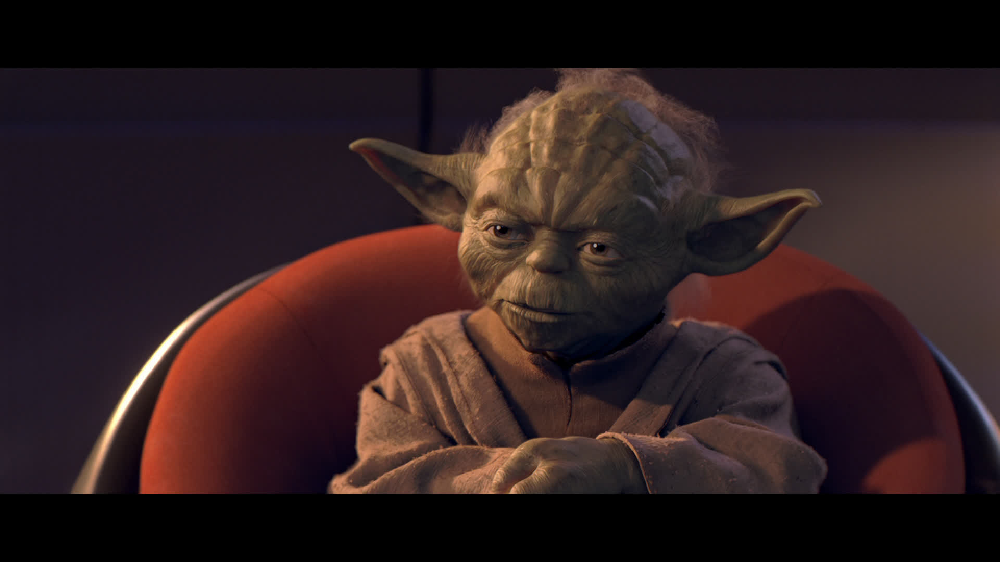
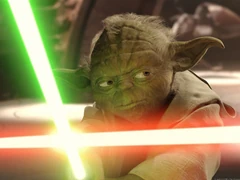
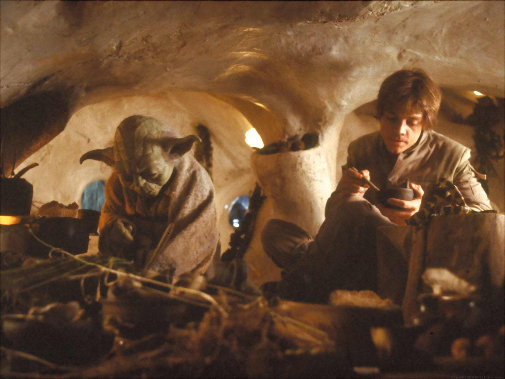

Yoda was a legendary Jedi Master who led the Jedi Order through the time of the High Republic, in the years leading up to
its destruction by the Sith, and during the transformation of the Galactic Republic into the Galactic Empire. Small in
stature but revered for his wisdom and power, Yoda trained generations of Jedi, ultimately serving as the Jedi Order's
Grand Master. He played integral roles in defending the Republic during the Clone Wars, survived Order 66, and lived to
passed on the Jedi tradition to Luke Skywalker, and unlocking the path to immortality.Born in 896 BBY, Yoda was almost
nine hundred years old in the latter days of the Republic.
Early days

Born nine-hundred years before the Battle of Endor, Yoda belonged to an ancient and mysterious species and little was
known of Yoda's early life;he never revealed his homeworld. As he was keenly attuned to the Force, he joined
the Jedi Order as a youngling. After undergoing the ritual known as the Gathering, he received his kyber crystal, and
Professor Huyang helped him construct his first lightsaber aboard the Crucible. At some point during his time
as a youngling, Yoda skipped across the lily pads in the Jedi Temple's meditation pond.Yoda was paired up with a
personal mentor. During their time together, Yoda's Jedi Master told him the tale of K'ungfu and Chuang, two great Jedi
of the past.Around the age of 100, in 796 BBY, Yoda was ready to pass on what he had learned. Having attained the
rank of Master, he spent the next eight centuries training and tutoring generations of Jedi. It was estimated that
over his lifetime, he trained around twenty-thousand Jedi. By the High Republic Era, Yoda was considered a great Jedi
Master. He had also gained a seat on the Jedi High Council and the rank of Grand Master. Two other Jedi—Xo Lahru
and Pra-Tre Veter—shared the Grand Master title with Yoda. Yoda also trained Count Dooku who turned to the Dark Side and
became a Sith.
Clone Wars

Having heard knews that 2 Jedi, Obi-Wan and Anakin as well as the Senator Padme were trapped on Geonosis, Yoda headed
to Kamino to take command of the clone forces and provide back up. Yoda led the clones into battle, thus beginning
a galaxywide conflict that would become known as the Clone Wars. As the clones engaged the Confederacy's forces in a
massive battle, Yoda headed to rescue Kenobi and Skywalker from Dooku, who had incapacitated the duo in a duel. The
diminutive Jedi Master showed his mastery and power over the Force surpassed that of Dooku by casually repelling the
latter's telekinetic assault and Force lightning. He then engaged Dooku in a brief but intense duel, having the upper
hand. Dooku, realizing he was outmatched by Yoda, used the Force to bring a large metal pillar down on the unconscious
Skywalker and Kenobi, forcing Yoda to break off the duel and use his own powers to stop it from crushing them. Dooku
used the distraction to flee aboard his personal craft. Although the battle on Geonosis ended in the Republic's favor,
Yoda was concerned about the growing influence of the dark side of the Force and the outcome of the Clone Wars.
Revenge of the Sith
Following Skywalker's appointment of Jedi Master in the middle of the movie, the Council chose to take action to avert
an imminent Separatist invasion of Kashyyyk. Yoda chose to personally oversee the defense, as he was held in high esteem
by the Wookiees. Before leaving for the planet, Yoda discussed with Obi-Wan and Windu about Anakin's assignment. Kenobi
expressed his former Padawan's disagreement, and asked if he was not going to fulfill the Prophecy when Windu doubted
his abilities. Yoda suggested that it could've been misread, but Obi-Wan believed they would not be let down, which Yoda
hoped would be true. On Kashyyyk, after a holographic call with the Council, Yoda left the call and was approached by
Commander Gree,a clone commander, who told him that the droids had started their power generators. Yoda ordered his
troops to prepare.As the battle continued, Supreme Chancellor Palpatine revealed his true identity as the Sith
Lord Darth Sidious, killed a group of Jedi Council members who had come to arrest him, and with his offers of dark
knowledge, turned Anakin Skywalker to the dark side of the Force. When Sidious bestowed the name of Darth Vader to
Skywalker, Yoda felt the moment through the Force. Back on Corusant, Sidious sent him and part of the 501st Attack
Battalion to attack the Jedi temple and slaughter all who resided there. Meanwhile, Sidious began to broadcast Order 66
to the clone troopers, a contingency order that required them to eliminate their Jedi Generals, which the Clone
complied to due to the activation of their biochips.As the clone army betrayed and turned on their leaders galaxywide,
Yoda sensed the deaths of his fellow Jedi and fell to his knees. Commander Gree and Captian Jek received Order 66 a few
moments afterwards and prepared to shoot Yoda. However, Yoda sensed their intentions and decapitated the duo with his lightsaber.
He then proceeded to escape with the help of the Wookiees Chewbacca and Tarfful, rendezvousing with Senator Bail Organa of
Alderaan and Obi-Wan Kenobi, who had escaped death on Utapau after killing General Grevious. The two Jedi discussed their
situation, during which Bail and Yoda informed Kenobi that the Temple was broadcasting a coded retreat message, ordering
all surviving Jedi to return to Coruscant. Yoda and Kenobi decided to return to the Temple and reconfigure the beacon to
warn any survivors to go into hiding, and to that end Bail took them to Coruscant. The two Jedi fought their way in and
witnessed the effects of the rampage by Vader and his clone unit, including the visible lightsaber cuts on several dead
Jedi. In the meantime, Sidious, as Palpatine, reforms the Republic into the first Galactic Empire with himself as its
Emperor. That was the beginning of the Age of the Empire. Upon arriving into the Chancellery Secretariat, Yoda confronted the Emperor, who surprised the Jedi and rendered him
berifly unconscious with a burst of Force lightning. As Sidious boasted how he came to eradicate the Jedi Order, Yoda
managed to wake up and slammed his opponent into a wall. Sidious attempted to depart, but was barred by Yoda. The duo
then drew their lightsabers and engaged in a fierce duel that soon continued into the central auditorium of the Senate
Building, driving the Sith back to his speaking pod. Briefly separated from Yoda, Sidious launched the numerous Senate
hoverpods at his opponent, but the Jedi nevertheless managed to catch up with him, engaging him at close quarters again
with his lightsaber drawn. Sidious then blasted Yoda with a burst of Force lightning which tore Yoda's lightsaber from
his hand, but which the Jedi proceeded to successfully deflect with his bare palms. Yoda slowly redirected Sidious's force
lighting at him, appearing to give the Jedi Master the upper hand. However, the buildup of energy subsequently triggered
an explosion that blew both combatants apart and caused Yoda to fall to the bottom of the chamber, while Sidious was
thrown out of the pod but managed to barely hold on to one of its guardrails, gaining the high ground. Despite neither
conquering the other, Yoda realized he had been defeated, which prompted the Jedi Master to flee through the maintenance
tunnels of the building. He then contacted Organa to rescue him via his airspeeder, considering the duel his personal
failure and voicing his intent to go into self-imposed exile. After being rescued by Organa, the two proceeded to the
asteroid Polis Massa, where Yoda conferred with Qui-Gon Jinn's spirit, who offered him to train him in techniques that
could help him retain his identity after his death. Obi-Wan Kenobi, having defeated but not killed Vader on Mustafar,
arrived soon thereafter, bringing with him the dying Senator Amidala. She gave birth to her twins from Anakin Skywalker
and named them Luke and Leia before her death.Sensing the children's power in the Force, Yoda, Kenobi and
Organa decided to keep them hidden in unsuspecting locations to avoid detection by the Empire; Luke Skywalker was
delivered to the Lars family on Tatooine, while Organa personally adopted his sister, Leia. As the trio prepared to
go their separate ways, Yoda asked Kenobi for a moment of his time. He revealed that he had training for him during
his solitude on Tatooine, and that Qui-Gon Jinn had reached the path to immortality, having returned from the Netherworld
of the Force. Yoda decided he would teach Kenobi to communicate with Jinn.
The End

Yoda and Luke Skywalker eating dinner in his hut
Using an E3-standard starship lifeboat,
Yoda returned to Dagobah to begin his own exile where he waited for the twins to grow up and continued his studies of
the Force. The lifeboat served as Yoda's initial shelter but it started to degrade within a year due to Dagobah's
swampy environment. As the first shelter was slowly consumed by the swamp, Yoda built a new home for himself. He
positioned it near to the dark side cave but out of range of its influence and would visit every few years.However, the
Dagobah wet season created a need for the Jedi Master to regularly relocate to the planet's highlands for the duration.
Following the destruction of the Jedi Order, Yoda was listed as one of the Inquisitorius' priority targets amongst
presumed survivors of the Great Jedi Purge. We see Yoda again in a few other movies mentoring Luke Skywalker either
physically or as a Jedi Ghost.